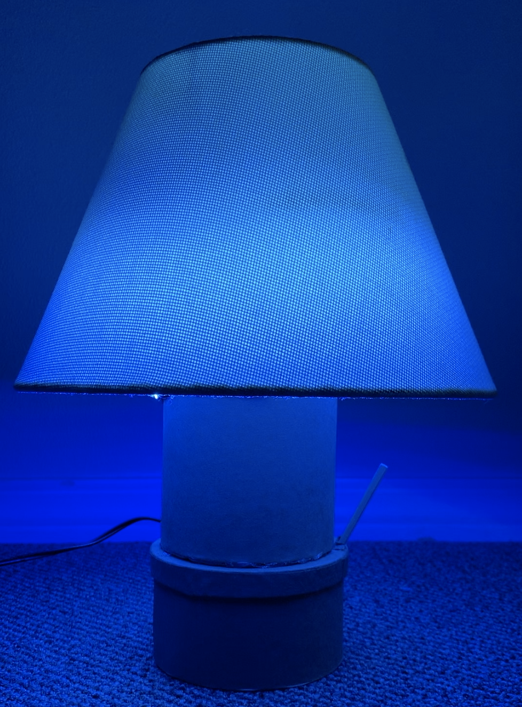
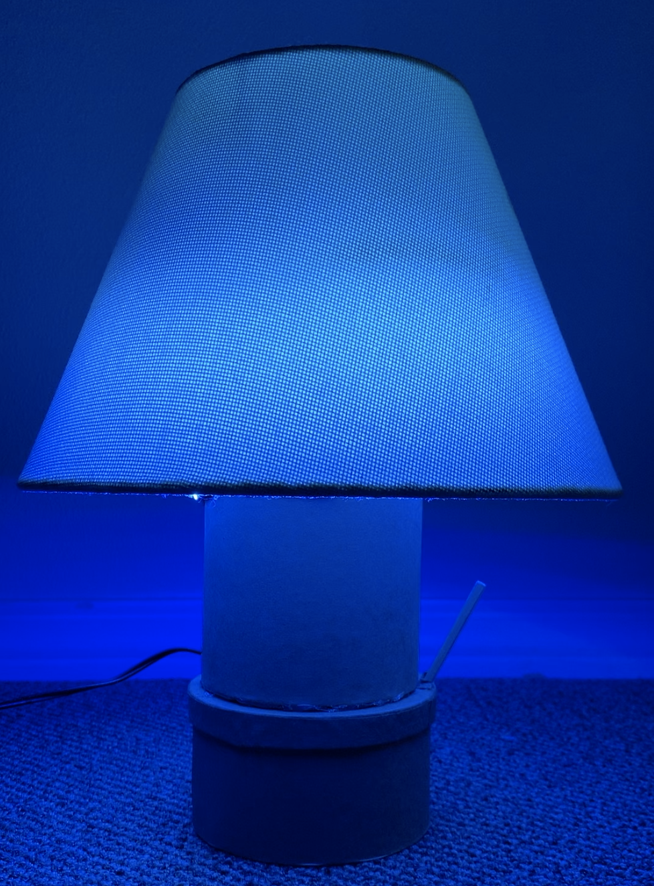

Final Project : Multi-Color Night Lamp!
Task
Integrate your electronics skills into a PRODUCT.
Project Description
I made circuit that changes colors in gradient for my lamp. The lamp is controlled with a button. Detailed info is provided below.
Demo
Rainbow Night Lamp with Pattern. I choose this color palette because it has ocean and calming vibe.
Circuit

 

I began setting up my circuit on the breadboard and once it worked as intended, I soldered the components to the Arduino uno protoshield to secure them in place. I hid the the LED Strip wires inside the top/tall cardboard closure and the circuit at the bottom cardboard closure. Only the button and power cord are accessible from the outside, but the cardboard lid for the circuit closure can easily be opened to change the code at any time.
Components Used
- Button (because the button was small, I improvised and glued a stick to it so the lamp can be turned on or off by pressed on the stick)
- 91 RGB LEDs (strip)
- 5V Power Jack
- 1k ohms resistor (additional for the LED strip since it already has its own resistor built in too)
- 10k ohms resistor (for the button)
- Jump wires
- Arduino uno microcontroller
- Arduino uno protoshield (components soldered to keep in place)
Components Set-Up
Schematic
The schematic above shows how each of the components are connected to make the circuit work.
LED Set-Ups
- The first set-up showed the LED strip which was unappealing
- The second set-up was messy because it was wrapped on the metal and showing from the top, still unappealing
- Lastly, I wrapped the LED on the cardboard enclosure for the pole neatly organize the LED Strip and maintain clear appearance from the outside.
Experimental Color Palette


I experimented with the Fast LED Color Palette, as you can see above you can use brighter or warmer colors.
Code
For this project I used RGB LED Strip to display the color palette I choose for my lamp.
Disclaimer!
- Utilized the FastLED Fire2012WithPalette code from Arduino example collection.
- My friend Sam Spieth also helped with the setup because he is familier with FastLED.